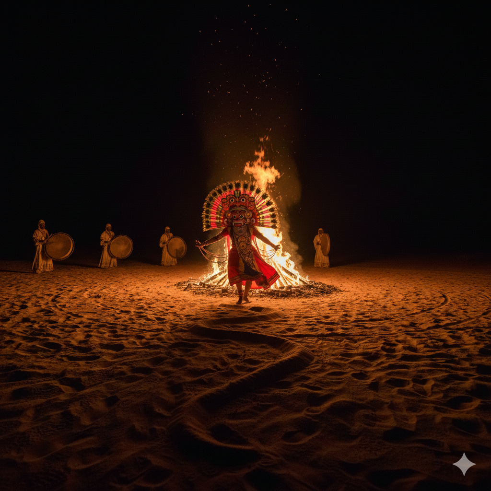
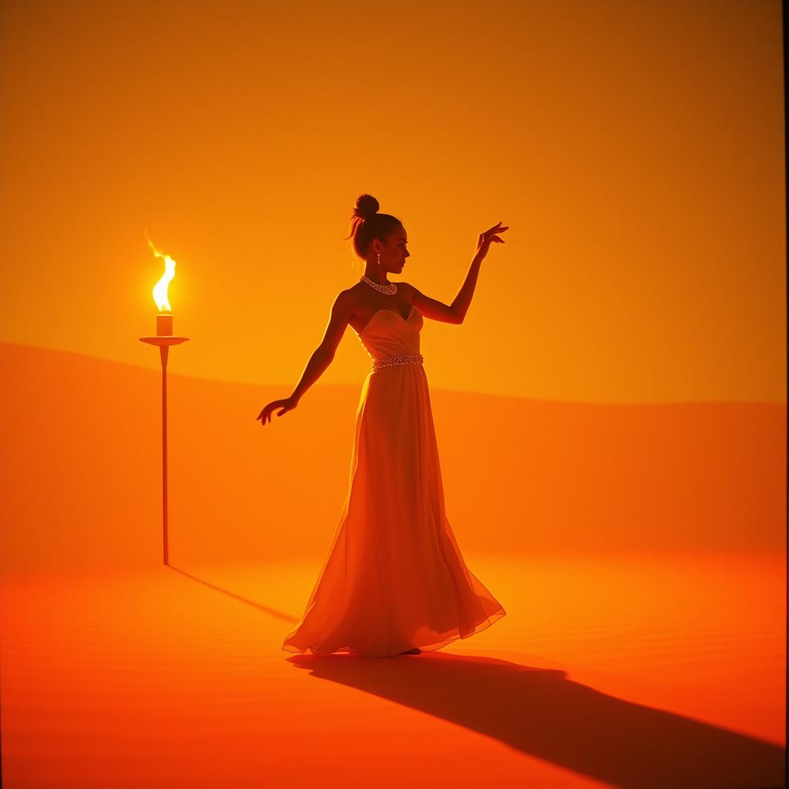
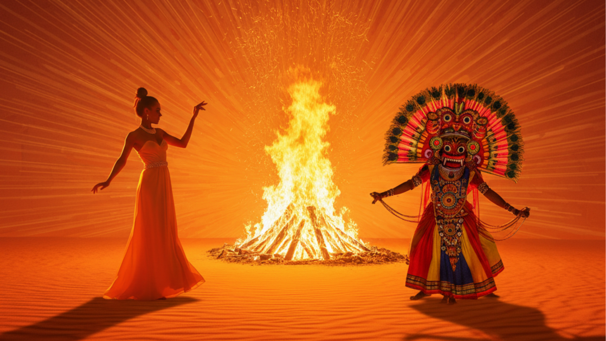

A stunning visual fusion where modern elegance faces ancient tradition. Connected by the
raw, untamed energy of a central ritual fire, two dancers embody opposing forces in perfect harmony
Aspect Ratio
16:9 Widescreen
Cultural Element
Sri Lankan Ves Dance
Music Style
Yak-Bera Drums
Visual Theme
Duality & Balance
Final Result
When ancient tradition meets modern grace through fire
The Original Song
A modern Sinhala hit reimagined as a global folk-fusion banger
පන්දම (Pandama) — The Happy Devil
This project is built around "පන්දම" (Pandama / The Torch) by Dhanith
Sri — a wildly popular Sinhala track that blends folk percussion with modern pop
sensibility. I reimagined it by translating the lyrics into playful, rhythmic English while preserving
the song's mischievous energy, and transformed the sound into a bouncy Melodic Folk-Fusion banger with
marimba, plucked strings, and Yak-Bera percussion for a global audience.
From Sinhala folk-pop to global Melodic Folk-Fusion
Creative Process
The reimagination preserved the song's infectious, playful spirit while transforming it across three
dimensions: translating the lyrics into bouncy, rhythmic English that captures the
mischievous "devil drums" energy and the desert love metaphor, restructuring the flow
into a modern verse-chorus-bridge format with a funky percussion break, and reimagining the
sonic palette from Sinhala pop production to a 2026 Melodic Folk-Fusion sound — bouncy
marimba melodies, plucked strings, and authentic Yak-Bera percussion fused with global pop aesthetics.
[Intro - Playful Marimba melody and a
bouncy drum beat]
(Tham-dena Thaa-nene naa...)
(Yeah, let's dance!)
[Verse 1 - Melodic and Playful]
Bring the torch and walk into my soul
With your golden dress, you're taking all control
Moving like a vine, dancing in the heat
Baby, bring the fire, make it all complete
In this dusty desert, I've never seen a face so fine
Like a rain in summer, girl I'm glad that you are mine
[Chorus - The Big Melodic Hook]
Deep inside my chest, the devil drums are playing loud
(Tham-dena Thaa-nene naa!)
Dancing in the light, standing out within the crowd
(Tham-dena Thaa-nene naa!)
I got that fire burning, and I'm losing all my cool
For your love, baby, I'm a happy fool!
[Verse 2 - Bouncy and Groovy]
Pearls around your waist, I love the way they shake
With that torch light burning, every heart is gonna break
Dark clouds in the sky whenever you're away
Filling up my world with a little bit of gray
In this dusty desert, I've never seen a face so fine
Like a rain in summer, girl I'm glad that you are mine
[Bridge - Funky Percussion Break]
(Tham-dena Thaanene...)
(Shake it for the devil now!)
(Tham-dena Thaanene...)
[Final Chorus - Full Vibrant Production]
Deep inside my chest, the devil drums are playing loud!
(Tham-dena Thaa-nene naa!)
I got that fire burning, and I'm losing all my cool!
For your love, baby, I'm a happy fool!
[Outro - Playful Marimba Fade]
Tham-dena Thaanene...
Keep that fire burning.
(Naa-naa-naa)
[End - Playful Drum Rimshot]
SUNO Pro — AI Music Prompt
2026 Melodic Folk-Fusion, 105 BPM, Bouncy Marimba and Plucked Strings, Rhythmic
Yak-Bera Percussion, Charismatic and Playful Male Vocals, Sunny and Infectious Energy, High-Fidelity
Synthesis, Global Pop Aesthetic
Project Overview
The dance of opposing energies
Creative Vision: Cultural Fusion Through Opposition
"The Fire Between Worlds" explores the philosophical concept of duality through visual metaphor—two
dancers representing opposing yet complementary forces, separated by fire yet unified by rhythm. The
modern, fluid grace of the woman in flowing orange silk stands in deliberate contrast to the ancient,
explosive power of the Sri Lankan devil dancer in his terrifying Mahakola mask. They never touch, yet
they're inextricably connected, their movements responding to each other across the flames like
conversation between elements: water and fire, moon and sun, calm and chaos.
Sri Lankan Devil Dance Tradition
The project draws from the ancient tradition of Sri Lankan devil dancing (Yakun Natima), specifically
the "Ves" dance style—one of the most demanding and revered forms in the tradition. Ves dancers wear
elaborate Mahakola or Raksha masks with bulging eyes and cobra crowns, adorned with brass plates and
vibrant red frills. The dance involves powerful stomps, rapid knee bends, and explosive head spins
that make ornaments blur into circular patterns.
Traditionally performed during healing rituals to the accompaniment of
Yak-Bera drums, the devil dance represents the channeling and exorcism of malevolent spirits. The
dancer embodies raw, primal energy—chaos that must be controlled, power that must be directed. By
placing this ancient ritualistic form opposite modern interpretive dance, the project creates
dialogue
between tradition and innovation, between cultural specificity and universal human expression.
Prompt Strategy: Cultural Fusion Framework
The project employed a "Cultural Fusion" strategy that explicitly contrasts modern aesthetic elements
with
traditional Sri Lankan cultural motifs. Rather than attempting to blend these elements into hybrid
forms,
the strategy maintains their distinct identities while creating visual and choreographic bridges between
them. The red mask and peacock-like headdress remain authentically traditional; the flowing silk and
fluid movement remain recognizably contemporary. The fusion occurs in their interaction, not their
compromise.
Fire as Mediator: The critical refinement involved adjusting the bonfire's intensity
and placement to ensure it functioned as a bridge between the two figures rather than mere
background
element. Early iterations had the fire as atmospheric decoration; the final version positions it as
the third character—the mediating force that both separates and connects, the barrier that enables
dialogue. The fire's white-hot embers rising to merge with the golden sky create vertical connection
between earthly performance and cosmic pattern, suggesting the ritual transcends human scale.
Tools & Technology
The technical foundation of the fire dance
Nano Banana Pro
Veo 3.1
Topaz Gigapixel
DaVinci Resolve
SUNO Pro
Canva
The Surreal Desert: Frozen Golden Hour
Where time becomes art
The Stylized Sky
The sky defies naturalistic representation—instead of conventional gradient, it manifests as a series of
stylized, bending golden lines resembling liquid gold brushstrokes or intricate woodcut art. These solar
lines pulse slowly like a heartbeat, casting warm, rhythmic glow over the entire desert. This
unconventional choice transforms the sky from passive backdrop into active participant, its pulse
suggesting cosmic rhythm that governs the dancers' movements below.
The aesthetic references both traditional Sri Lankan art forms (particularly
temple paintings with their stylized representations of divine radiance) and Art Nouveau's organic,
flowing line work. The result feels simultaneously ancient and contemporary, cultural and universal—a
sky
that exists in mythological space rather than physical geography.
The Central Bonfire: Third Character
A massive, roaring bonfire stands exactly between the two figures, positioned with geometric precision.
Unlike the stylized sky, the flames are rendered with hyper-realistic detail—individual tongues of fire
curl and twist, white-hot embers rise in turbulent spirals, heat distortion creates wavering air that
blurs the dancers at the edges. This deliberate contrast between stylized environment and realistic fire
emphasizes the elemental, primal nature of flame—it refuses abstraction, insisting on its dangerous,
transformative power.
The flames rise vertically to merge with the golden artwork of the sky,
creating visual bridge between earthly performance and cosmic pattern. The fire doesn't just separate
the
dancers—it connects them through shared heat, shared light, shared danger. Its placement forces them to
orbit around a common center, creating mandala-like choreographic pattern where opposition generates
circular unity.
The Characters: Contrast in Motion
Embodiments of opposing forces
The Girl: Moon/Water Energy
Visual Design
Draped in flowing, translucent silk that catches firelight and transforms it into liquid amber.
The fabric moves with impossible grace, defying gravity and wind patterns. Her hair flows as if
underwater—continuous, serpentine movement that never settles, suggesting she exists in
different
physical laws than the earthbound devil dancer.
Movement Vocabulary
Fluid, serpentine, and feminine in the archetypal sense—curves without angles, flow without
interruption. Her dance is composed of slow, continuous arcs. She moves with effortless,
gravity-defying grace, her hands tracing patterns in the air like a weaver creating invisible
fabric. Every gesture connects to the next without pause, creating endless ribbon of motion.
Symbolic Role
She represents the "Moon" or "Water"—cool, calm, mesmerizing. Her energy is receptive rather than
projective, absorbing and redirecting rather than generating force. Where the devil dancer
commands through explosive power, she captivates through hypnotic continuity. She is the yin to
his yang, the silence between drumbeats, the stillness at the storm's center.
Choreographic Function
Her movements provide the sustained, lyrical counterpoint to the devil dancer's percussive
punctuation. When he stomps, she arches. When he spins violently, she rotates serenely. She
proves that power doesn't require force—her quiet grace commands equal attention to his
explosive
theatricality.
The Sri Lankan Devil Dancer: Sun/Fire Energy
Visual Design
Wearing a terrifying, vibrant Mahakola or Raksha mask—traditional devil mask with bulging eyes
that seem to track the viewer, cobra crowns rising from the head like divine warning, and facial
features twisted into expressions of controlled fury. His body is adorned with brass plates that
catch firelight and transform him into moving constellation of reflected flames. Red frills and
fabric extensions amplify every movement, making him appear larger and more threatening.
Movement Vocabulary
Staccato, explosive, and rhythmic—the antithesis of the girl's continuous flow. He performs the
"Ves" style of traditional Sri Lankan devil dance: sharp knee bends that drop his center of
gravity close to earth, powerful stomps that send sand flying in visible shockwaves, and
rapid-fire head spins so violent that his mask ornaments blur into circular halos. His movement
is all punctuation—exclamation points of physical force separated by brief, charged stillness.
Symbolic Role
He represents the "Sun" or "Fire"—raw, chaotic, grounding. His energy is projective and
aggressive, generating force rather than redirecting it. Where the girl transcends gravity, he
violently asserts connection to earth, his stomps insisting on physical weight and consequence.
He is the yang to her yin, the drumbeat itself made flesh, the storm that demands
acknowledgment.
Cultural Authenticity
The choreography draws from actual Ves dance tradition—one of the most physically demanding
performance forms in Sri Lankan culture. Traditionally performed during healing rituals
accompanied by Yak-Bera drums, the dance channels destructive energy and transforms it into
controlled performance. The devil dancer doesn't merely represent chaos—he demonstrates mastery
over chaos, dangerous power made purposeful through discipline and tradition.
Visual Progression
The dance frozen in three decisive moments

Image 01
The Opposition Established
The opening composition establishing the fundamental duality: modern feminine grace on the left,
ancient masculine power on the right, elemental fire between. The stylized golden sky pulses
above while hyper-realistic flames roar in the center. Her translucent silk catches amber
firelight; his brass plates reflect it as hard points of light. The contrast in costuming,
movement quality, and energy signature is immediately apparent—these are not complementary
forces
but opposing ones, held in tension by the fire that simultaneously separates and connects them.

Image 02
The Synchronization Moment
The peak of choreographic dialogue where opposing movements find unexpected harmony. As the devil
dancer executes a powerful stomp sending sand flying, the girl performs a high, arching reach—
his downward force mirrored by her upward extension. Their shadows stretch across the desert
sand, growing long and distorted in the firelight. Notice how their shadows nearly touch—the
visual suggestion that despite physical separation, their energies overlap in the shadow realm.
The fire between them burns brightest in this moment, white-hot embers rising like offerings to
the golden sky.

Image 03
The Climactic Convergence
The culminating image where visual and symbolic elements reach maximum intensity. The girl's silk
and the devil's ribbon extensions flow in the same wind current, creating a visual bridge across
the flames—proof that despite their opposition, they exist in the same environment, affected by
the same forces. The camera captures the slow dolly zoom effect, creating subtle distortion that
emphasizes the surreal quality of the moment. The Yak-Bera drums (implied in the composition's
tension) reach their crescendo. The shadows overlap completely, and in that overlap, golden
sparks erupt from the fire—visual confirmation that when opposing forces truly synchronize, they
generate something neither could produce alone.
The Choreography: Synchronized Opposition
When different movements speak the same language
Mirroring Through Contrast
The animation reaches its conceptual peak when the two radically different movement vocabularies
synchronize without compromising their distinct identities. When the devil dancer stomps with explosive
downward force, the girl doesn't mimic the stomp—she performs a soft, high-reaching arch. The movements
are opposite in quality (harsh vs. gentle, down vs. up) yet perfectly synchronized in timing. This
creates visual argument: unity doesn't require similarity; it requires mutual awareness and rhythmic
agreement.
They circle the fire in perfect diameter, orbiting the flames like planets
around a sun. They never touch—physical contact would collapse the tension that gives their relationship
power. But they remain always aware of each other, their movements responding across the barrier of
flame. The fire doesn't prevent their connection; it defines the terms of their connection, forcing them
to communicate through gesture rather than touch, through synchronized rhythm rather than physical
proximity.
The Shadow Play: Hidden Convergence
As the dancers circle the fire, their shadows grow long and distorted against the sand dunes, stretched
by the low angle of firelight. These shadows become characters themselves—simplified, exaggerated
versions of the dancers that reveal underlying truths. When the devil dancer's angular, explosive
movements cast shadows and the girl's flowing curves create shadow ribbons, these shadows occasionally
overlap on the sand.
The crucial detail: when their shadows touch—when opposition briefly
converges in the shadow realm—a burst of golden sparks erupts from the fire. This visual effect suggests
that the fire itself responds to their synchronization, that it registers their momentary unity and
celebrates it with pyrotechnic punctuation. The shadows represent truth beyond appearances—though the
dancers maintain physical separation, their essences are already overlapping, already in dialogue,
already creating something new through their interaction.
The Climactic Convergence
The choreographic and cinematic peak involves a slow widescreen (16:9) dolly zoom—the camera moves
physically closer while the lens zooms out, creating subtle spatial distortion that emphasizes the
surreal quality of the moment. As the Yak-Bera drums intensify (the traditional percussion that drives
devil dance rituals), something impossible occurs: the girl's silk and the devil's ribbon extensions
flow
in the same wind current.
This shared wind current creates a visual bridge across the flames—fabric from
both sides reaching toward each other without the dancers moving from their positions. The bridge is
temporary, created by environment rather than intention, yet it proves connection is possible even when
separation is maintained. The dolly zoom distortion makes this moment feel like a threshold being
crossed, reality briefly becoming flexible enough to allow opposites to touch without compromising their
essential natures.
Technical Visual Specifications
Animation AI guidance for authentic execution
Lighting Design: Dynamic Rim Lighting
Fire-Side Illumination (Inner Profiles)
The bonfire provides harsh orange light with high contrast on the dancers' inner profiles—the sides
facing the flames. This creates strong rim lighting that separates their silhouettes from the
background and emphasizes their three-dimensional forms. The orange should be intense enough to
create visible color cast on skin and costume while maintaining natural falloff as the light wraps
around toward the outer profiles.
Sky-Side Illumination (Outer Profiles)
The stylized "sunshine lines" in the sky provide soft, golden glow on the dancers' outer profiles—the
sides facing away from the fire. This secondary light source is cooler in temperature than the fire
(more yellow than orange) and significantly softer, creating gentle fill that prevents the outer
profiles from falling into complete shadow. The two-source lighting creates dimensional modeling
that
makes the dancers feel grounded in the space rather than pasted onto the background.
Physics Simulation Requirements
High-Particle Simulation (Sand & Fire)
Sand displacement requires individual particle simulation when the devil dancer stomps—grains should
spray outward in cone-shaped patterns, briefly hover, then fall according to realistic gravity. Fire
embers need turbulent rising motion with occasional sideways drift from heat currents, each ember
glowing bright orange-white before cooling to red as it rises and fading completely before reaching
the top of frame.
Low-Gravity Physics (Girl's Dress)
The girl's translucent silk should exhibit reduced gravitational influence—fabric floats and drifts
rather than hanging heavily. Movement should have delayed response: when she moves, the fabric
continues flowing after she stops, creating trailing effect. The silk should appear almost
weightless, as if underwater or in slow-motion, emphasizing her supernatural, otherworldly quality.
High-Tension Physics (Devil's Costume)
The devil dancer's brass plates and ribbon extensions should exhibit high-tension, snapping physics.
When he spins, ribbons should extend outward with centrifugal force, creating taut lines. When he
stops suddenly, they should snap back with visible recoil. Brass plates should move with rigid,
mechanical quality—clicking against each other audibly (implied visually), emphasizing weight and
physical constraint versus the girl's freedom from material limitations.
Color Palette: Elemental Contrast
Deep Obsidian Black
The base color for shadows and the darkest values, particularly in the sky beyond the golden lines
and in the devil dancer's costume where brass plates don't catch light. This black should be rich
and saturated rather than flat grey, providing dramatic contrast that makes the fire and golden
elements appear more luminous.
Burning Ember Orange
The primary fire color—intense, saturated orange with white-hot highlights in the flame cores. This
orange should cast visible color onto everything the fire illuminates, creating warm glow on skin
and
costumes. The orange represents active transformation, dangerous energy, the liminal space between
destruction and creation.
Metallic Gold
The color of the stylized sky, the brass elements on the devil dancer's costume, and the sparks that
erupt when shadows overlap. This gold should feel precious and divine—not yellow but true metallic
gold with reflective quality. It represents the cosmic order, the pattern that governs chaos, the
aesthetic perfection that emerges when opposing forces synchronize.
Technical Insights & Cultural Reflections
Lessons from bridging worlds through fire
Cultural Respect Through Authentic Representation
The project's success depends on treating the Sri Lankan devil dance tradition with genuine respect
rather than using it as exotic decoration. The Mahakola mask, the Ves dance choreography, the Yak-Bera
drum accompaniment—these elements carry cultural and spiritual significance that shouldn't be diluted or
misrepresented. By researching authentic movement vocabulary, costume details, and performance context,
the project honors the tradition while placing it in creative dialogue with contemporary dance forms.
Fire as Compositional Anchor
The refinement process that transformed the bonfire from background element to central character
demonstrates how careful iteration improves conceptual clarity. When the fire was merely atmospheric,
the
two dancers felt arbitrarily separated. By intensifying the flames, positioning them with geometric
precision, and rendering them with hyper-realistic detail that contrasts with the stylized environment,
the fire became the mediating force that explains why these opposite energies can coexist without
destroying each other—they're separated by transformative element that both protects and connects.
Movement as Philosophy
The choreographic concept—synchronization without mimicry, unity through maintained difference—expresses
philosophical position about how opposing forces relate. Rather than suggesting that opposites must
compromise or merge into synthesis, the piece argues that opposites can maintain their distinct
identities while achieving profound connection through rhythmic agreement and mutual awareness. The girl
doesn't become more explosive; the devil dancer doesn't become more fluid. They remain completely
themselves while discovering they can speak the same language.
Project Legacy: "The Fire Between Worlds" demonstrates that cultural fusion doesn't
require cultural blending—it requires respectful dialogue between distinct traditions. By maintaining
the
authentic identity of Sri Lankan devil dance while placing it in conversation with contemporary
interpretive movement, the project creates space where cultural specificity and universal themes
coexist. The technical execution—from lighting design that models dimensional space to physics
simulations that distinguish between characters' movement qualities—serves the conceptual foundation:
that opposition isn't obstacle to unity but the very condition that makes meaningful unity possible.
When shadows touch across the fire and golden sparks erupt, we witness not the elimination of difference
but its transformation into dialogue, not the resolution of tension but its elevation into art.